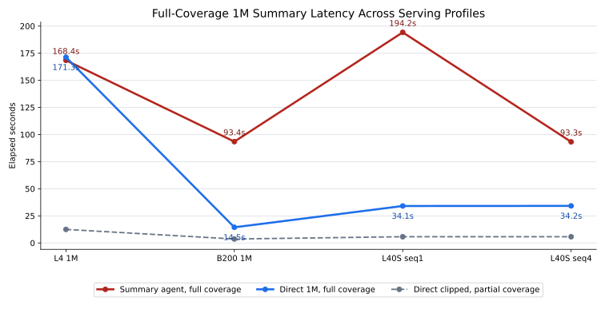
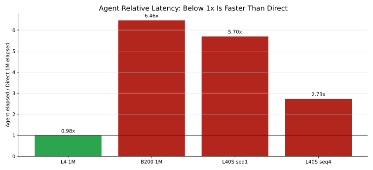

1M Summary Agent Comparison Report
Executive Conclusion
Across the completed scenarios, the summary-agent approach only wins when direct full-context input is impossible. Once the endpoint can accept direct 1M efficiently, direct is simpler and faster in these tests.
The tuned L40S agent run improved from 194.22s to 93.26s after increasing max_num_seqs, but direct 1M on the same endpoint remained about 34.19s. On B200, direct 1M was 14.46s while the agent was 93.45s.
Latency Charts


Scenario Comparison
| Scenario | Hardware | Serving profile | Agent | Direct 1M | Direct clipped | Interpretation |
|---|---|---|---|---|---|---|
| L4 32K | 4x NVIDIA L4 | max_model_len=32768 | 168.40s | N/A | 12.51s | direct full failed |
| L4 1M | 4x NVIDIA L4 | max_model_len=1010000, YaRN/RoPE | 168.40s | 171.27s | 12.51s | agent faster, 0.98x direct time |
| B200 1M | 1x NVIDIA B200 | max_model_len=1010000, max_num_seqs=1 | 93.45s | 14.46s | 3.66s | agent slower, 6.46x direct time |
| L40S seq1 | 4x NVIDIA L40S, PCIe only | max_model_len=1010000, max_num_seqs=1 | 194.22s | 34.10s | 5.77s | agent slower, 5.70x direct time |
| L40S seq4 | 4x NVIDIA L40S, PCIe only | max_model_len=1010000, max_num_seqs=4 | 93.26s | 34.19s | 5.76s | agent slower, 2.73x direct time |
When The Agent Still Helps
- The endpoint cannot accept the full input because of context, gateway, or KV cache limits.
- The workflow must prove source coverage and retain full request-body audit JSONL.
- The task needs structured per-section extraction before final reduction.
- The input exceeds the largest available model context.
Portable Evidence
This directory includes metrics.csv, metrics.json, local chart assets, copied source reports under evidence/reports/, and copied raw benchmark/log artifacts under evidence/raw/.
Caveats
- The source document is synthetic and repetitive; this is a latency/context benchmark, not a quality benchmark.
- Hardware differs across scenarios, so this is not a controlled A/B test.
- Some model outputs contained reasoning-style text; production formatting would require stricter prompts or model settings.